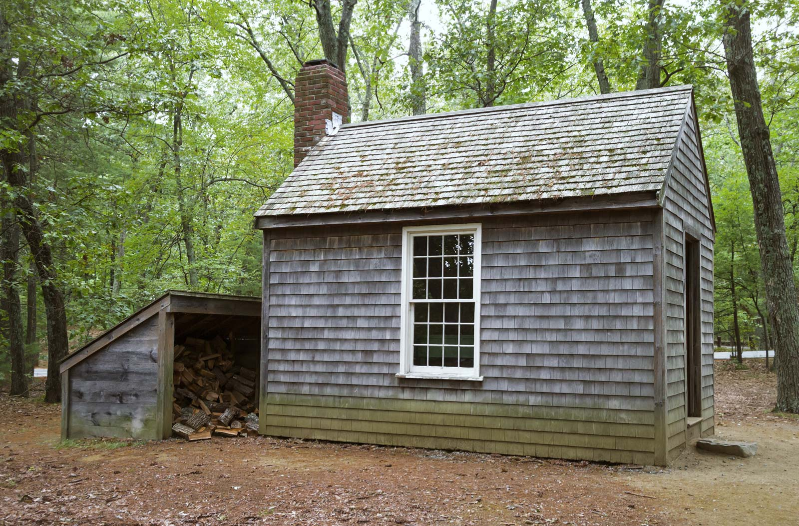
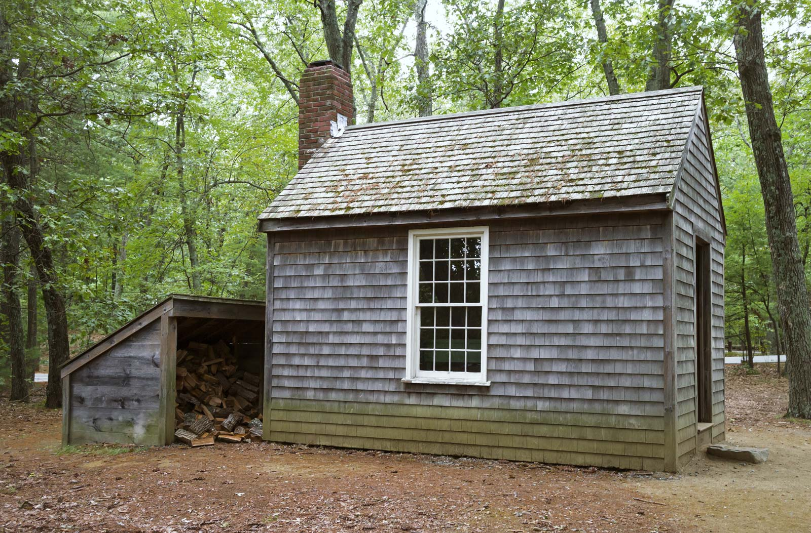

Welcome to the American Romanticism period, a period characterized by transcendentalism and anti-transcendentalism.
Two songs that describe this period are High Cotton and Song of the South, both by the band Alabama. Each song has their own page.
First, let's define two important terms during this time period: Transcendentalism and Anti-Transcendentalism.
Transcendentalism
This philosophy emphasizes living a simple life, celebrating nature, and characterized by personal emotion and imagination.
Anti-Transcendentalism
This philosophy believes that humans have the capacity for evil, used gothic elements such as bizarre situations, demonic and insane depictions, and plots about sin, guilt, madness, among others.
Authors and their texts
Like all literary time periods, many authors wrote texts that either categorized them as either a transcendentalist or anti-transcendentalist. Below are some examples.
- The Minister's Black Veil by Nathaniel Hawthorne - Anti-Transcendentalist
- Essays of Ralph Waldo Emerson (Nature, Friendship, and Self-Reliance) - Transcendantalist
- Walden by Henry David Thoreau - Transcendentalist
- The Maldive Shark by Herman Melville - Transcendentalist
- Nature by Henry Wadsworth Longfellow - Transcendentalist
- Annabel Lee by Edgar Allan Poe - Anti-Transcendentalist
 
